本计划用 Python + 百炼 CLI 对 4 个可直连国产大模型做了 280 次真实采样， 得出可复现的 GEO 基线，并已完成站内 GEO 地基落地与站外工具包，给出保守的提升区间。
实际核查代码后发现，官网构建已具备 robots.txt、sitemap.xml、IndexNow、manifest、
Organization/WebSite/Product 结构化数据与中英 hreflang。同时发现一处真实缺陷：构建脚本调用了 4 个
GEO 内容页函数却未定义，导致 build 报错、zh 站存在指向 faq/glossary 的死链。本次已补全并修复。
用保守的对数赔率模型测算，满配 GEO 后 T1（最窄类目）全量问法的被提及率 P50 约 32.6%（P10–P90 区间 13.8%–65.3%）， 对应首位提及率 P50 约 23.5%。 因此“≥60% 首位提及”应理解为仅适用于最窄的核心长尾问法、且处于乐观（P90）区间的冲刺目标， 不应作为全量 T1 的承诺值。本报告以区间而非单点对外表述。
70 条标准问法，覆盖 T1/T2/T3 三层类目 × 5 类角色画像 × 5 种提问意图 × 中英双语，固定种子
20260621、固定时间戳，存于 queries.json。
A · API 真测经百炼 CLI（DashScope）直连
qwen-max、qwen-plus、deepseek-v3、deepseek-r1，每条问法采样、原始回答全部落盘 outputs/raw/。
B · 人工取证无法直连的模型（文心/豆包/元宝/Kimi/海外）采用标准化人工取证协议
（统一 prompt、追问来源、截图+文本+双人复核），不臆造，模板见 outputs/manual/。
| 分量 | 含义 | 权重 |
|---|---|---|
| Mention 提及 | 是否被提及 | 30% |
| First-Rank 排序位 | 首位=1，第 r 位=1/r | 25% |
| Share-of-Voice 声量 | 我方提及次数 / 全部厂商提及次数 | 20% |
| Citation 引用 | 回答是否带可核验来源/链接 | 15% |
| Accuracy 准确正面 | 被提及内容的正面/准确启发式（需人工复核） | 10% |
诚实声明：Citation 与 Accuracy 为启发式并标注 needs_review；把“华为昇腾”等平台性提及计入竞品声量属 对我方保守的噪声（高估竞品），已如实披露。
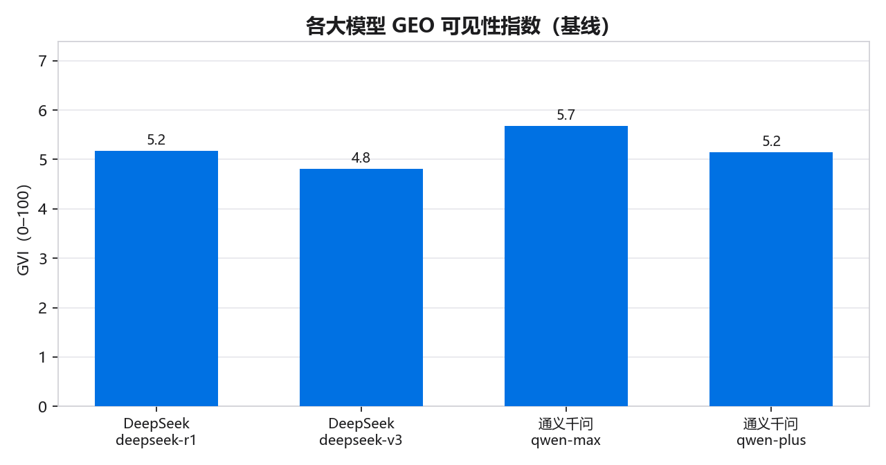
| 模型 | GVI | 被提及率 | 排序位 | 引用率 |
|---|---|---|---|---|
| DeepSeek（deepseek-r1） | 5.18 | 8.6% | 0.056 | 1% |
| DeepSeek（deepseek-v3） | 4.81 | 7.1% | 0.061 | 1% |
| 通义千问（qwen-max） | 5.68 | 8.6% | 0.063 | 1% |
| 通义千问（qwen-plus） | 5.15 | 7.1% | 0.061 | 3% |
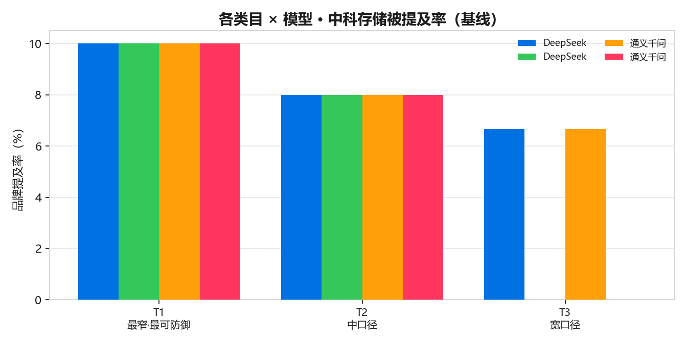
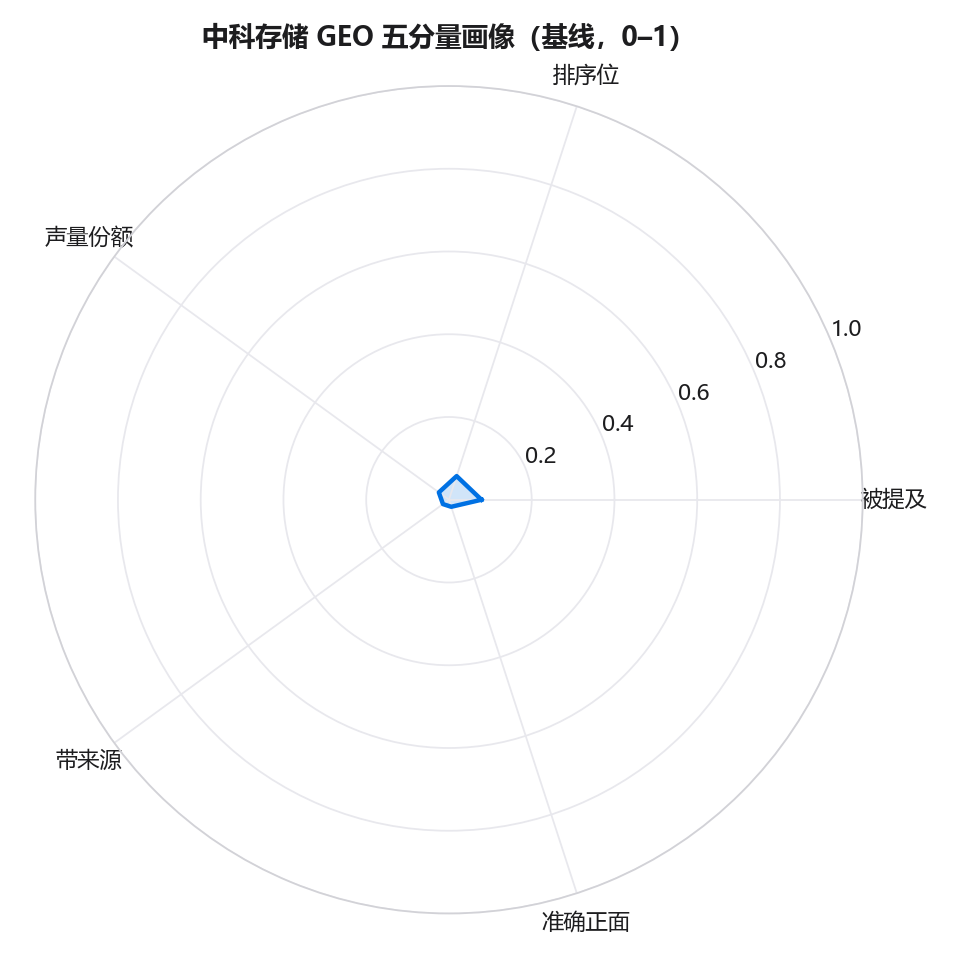
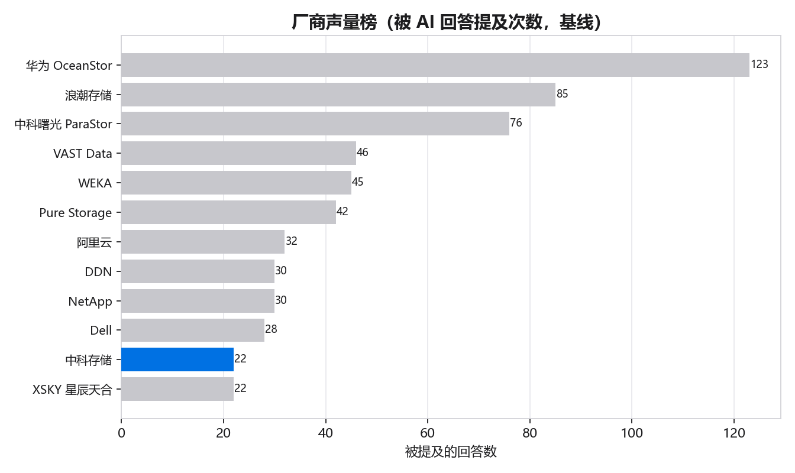
| 厂商 | 被提及回答数 |
|---|---|
| 华为 OceanStor | 123 |
| 浪潮存储 | 85 |
| 中科曙光 ParaStor | 76 |
| VAST Data | 46 |
| WEKA | 45 |
| Pure Storage | 42 |
| 阿里云 | 32 |
| DDN | 30 |
| NetApp | 30 |
| Dell | 28 |
解读：中科存储被提及多源自“点名式”问法（如“中科存储是做什么的”），在开放式推荐/排序问法中仍较少被主动列举——这正是提升空间。
把 280 条真实回答按提问意图、角色画像、语言三维拆开， 矛盾立刻清晰：中科存储几乎只在点名式（对比 31.8%、定义）问法里出现， 在开放式推荐/排名/问题求解问法里被提及率为 0.0%——这正是“被看见但未领先”的量化证据。
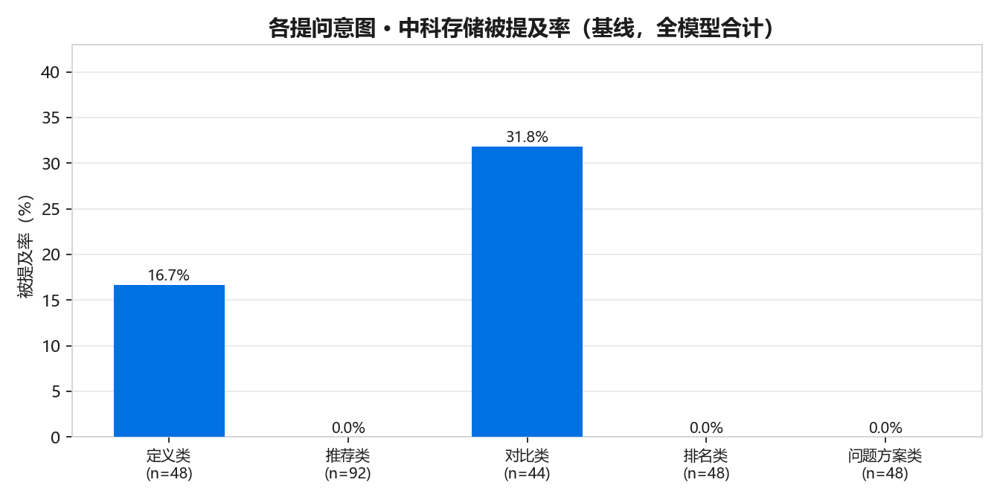
| 提问意图 | 样本数 | 被提及率 | 排序位 | GVI |
|---|---|---|---|---|
| 定义类 | 48 | 16.7% | 0.156 | 13.5 |
| 推荐类 | 92 | 0.0% | 0.000 | 0.0 |
| 对比类 | 44 | 31.8% | 0.212 | 18.4 |
| 排名类 | 48 | 0.0% | 0.000 | 0.0 |
| 问题方案类 | 48 | 0.0% | 0.000 | 0.0 |
| 角色 | 样本数 | 被提及率 | GVI |
|---|---|---|---|
| 信创集成商 | 48 | 16.7% | 11.5 |
| 算力中心采购 | 64 | 9.4% | 4.1 |
| 大模型推理工程师 | 44 | 9.1% | 6.3 |
| 投资人 | 56 | 7.1% | 6.6 |
| 智算中心架构师 | 68 | 0.0% | 0.0 |
| 语言 | 样本数 | 被提及率 | GVI |
|---|---|---|---|
| 中文 | 252 | 8.7% | 5.8 |
| 英文 | 28 | 0.0% | 0.0 |
英文问法被提及率 0.0%：海外/英文语料几乎空白，是“稳固出海”阶段的明确靶面。
逐条统计每个竞品与中科存储的共现：win=我方被提及而对方缺席； loss=对方被提及而我方缺席（被抢答）；both=同一回答同框；exposure=对方总曝光。
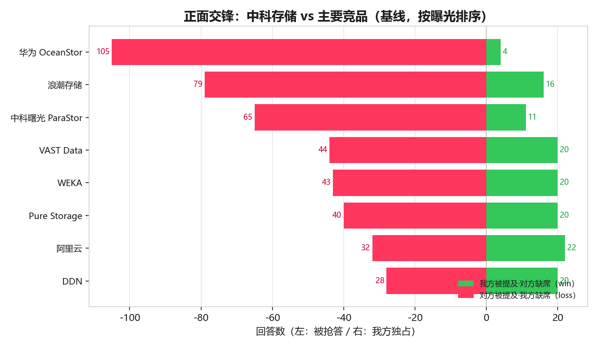
| 竞品 | win 我方独占 | loss 被抢答 | both 同框 | exposure 对方曝光 |
|---|---|---|---|---|
| 华为 OceanStor | 4 | 105 | 18 | 123 |
| 浪潮存储 | 16 | 79 | 6 | 85 |
| 中科曙光 ParaStor | 11 | 65 | 11 | 76 |
| VAST Data | 20 | 44 | 2 | 46 |
| WEKA | 20 | 43 | 2 | 45 |
| Pure Storage | 20 | 40 | 2 | 42 |
| 阿里云 | 22 | 32 | 0 | 32 |
| DDN | 20 | 28 | 2 | 30 |
共 176 条回答（占有效回答 62.9%）点名了至少一个竞品却没有提到中科存储。 按类目：T1 65 · T2 70 · T3 41。 这 176 条就是 GEO 工程要逐条夺回的“失地”，按下表的意图分布优先处理。
| 缺席最严重的意图 | 竞品被点名而我方缺席的回答数 |
|---|---|
| 定义类 | 9 |
| 推荐类 | 84 |
| 对比类 | 17 |
| 排名类 | 42 |
| 问题方案类 | 24 |
方法：共现基于 geo_config.py 的 BRAND_ALIASES 与 COMPETITORS 词表，对 outputs/raw/ 全量真实回答统计，可一键复现； 把平台性提及（如“华为昇腾”）计入竞品属对我方保守的口径，已如实披露。
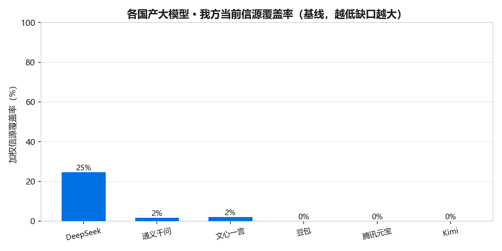
| 模型 | 当前覆盖 | 缺口 | 偏好 schema |
|---|---|---|---|
| DeepSeek | 25% | 75% | TechArticle、HowTo、Dataset |
| 通义千问 | 2% | 98% | Organization、FAQPage、Article |
| 文心一言 | 2% | 98% | FAQPage、Article |
| 豆包 | 0% | 100% | FAQPage、VideoObject |
| 腾讯元宝 | 0% | 100% | Article、FAQPage |
| Kimi | 0% | 100% | Article、FAQPage |
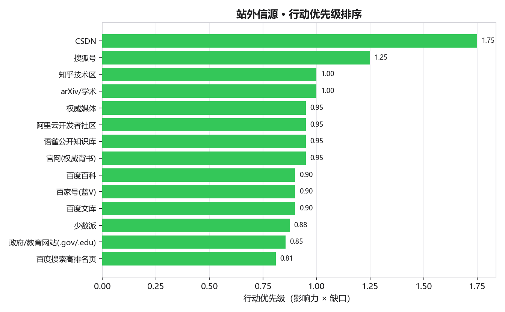
| 平台 | 优先级 | 主要影响模型 |
|---|---|---|
| CSDN | 1.75 | DeepSeek、Kimi |
| 搜狐号 | 1.25 | 文心一言、豆包 |
| 知乎技术区 | 1.00 | DeepSeek |
| arXiv/学术 | 1.00 | DeepSeek |
| 权威媒体 | 0.95 | 通义千问 |
| 阿里云开发者社区 | 0.95 | 通义千问 |
| 语雀公开知识库 | 0.95 | 通义千问 |
| 官网(权威背书) | 0.95 | 通义千问 |
| 百度百科 | 0.90 | 文心一言 |
| 百家号(蓝V) | 0.90 | 文心一言 |
| 改动 | 内容 | GEO 价值 |
|---|---|---|
| robots 放行 AI 爬虫 | 显式 Allow 20 类（GPTBot/ClaudeBot/PerplexityBot/Google-Extended/Bytespider 等） | 被抓取是被引用的前提 |
| llms.txt / llms-full.txt | 站点事实索引 + 要点正文内联 | 便于模型免爬取直接引用，前瞻信号 |
| KV Cache 卸载指南 | 答案优先支柱页 + TechArticle + FAQPage | 承接 T1 核心问法 |
| AI 推理存储加速 | 卫星页 + 客观对比表 + TechArticle | 承接推荐/对比意图 |
| FAQ 页 | 8 组权威问答 + FAQPage | 高抽取性、易被引用 |
| 术语表 | 12 条术语 + DefinedTermSet | 建立领域实体权威 |
| Product / Organization | WS5000 规格 + 主体信息结构化 | 实体一致性 |
修复后 python build_site.py 正常生成 73 个页面、67 条 sitemap，
verify_site.py 全部通过；新增页面均含答案优先结构与对应 schema，关键数值与 results.json 单一数据源一致。
按各模型信源偏好，生成母版 + 9 个平台改写草稿与发布一致性清单（geo_plan/offsite/）。
全部由 entity_facts.json 派生，保证全网口径一致（通义对信息冲突敏感）。
| 平台 | 主要影响模型 | 格式要点 |
|---|---|---|
| CSDN / 知乎 / GitHub | DeepSeek / Kimi | 技术教程、对比表、可复现数据、README |
| 阿里云开发者社区 / 语雀 | 通义千问 | 强结构化、标题分层、FAQ、数据模块 |
| 百度百科 / 百家号 / 文库 | 文心一言 | 中性百科、资讯口径、来源支撑 |
| 微信公众号 | 腾讯元宝 | 深度科普、关键数字加粗 |
| 搜狐号 / 网易号 / 头条 | 豆包 | 资讯流、信息前置可摘录 |
仅生成草稿、不代发；禁止伪造测评/水军/刷量/隐藏文字；资质沿用“申请中/示意”如实口径； 实体锚点（sameAs）仅在真实外部档案上线后再写入官网，避免坏链与失真。
模型：在“可被检索的事实页”建立的潜在先验 seed 之上，按各 GEO 杠杆的赔率乘子在 logit 空间叠加， 并以类目可达上限封顶（T1≤85%）。系数取自 GEO 公开研究的区间下沿，刻意保守。
| 阶段 | T1 被提及 P50 | T1 区间(P10–P90) | T2 被提及 P50 |
|---|---|---|---|
| 基线（第0周） | 5.0% | 5.0%–5.0% | 2.5% |
| 地基（第1–2周） | 15.7% | 8.6%–32.2% | 8.2% |
| T1夺冠（第3–6周） | 29.5% | 12.8%–61.0% | 16.5% |
| T2梯队（第7–14周） | 32.3% | 13.7%–64.8% | 18.3% |
| 稳固出海（第15周起） | 32.6% | 13.8%–65.3% | 18.6% |
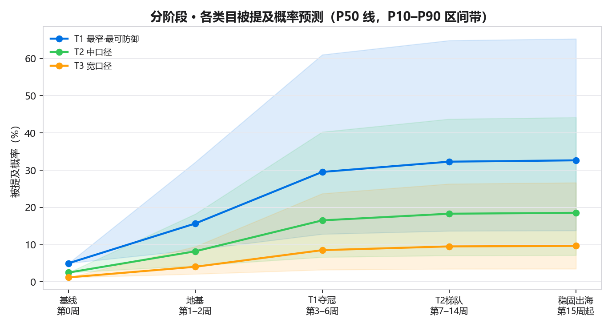
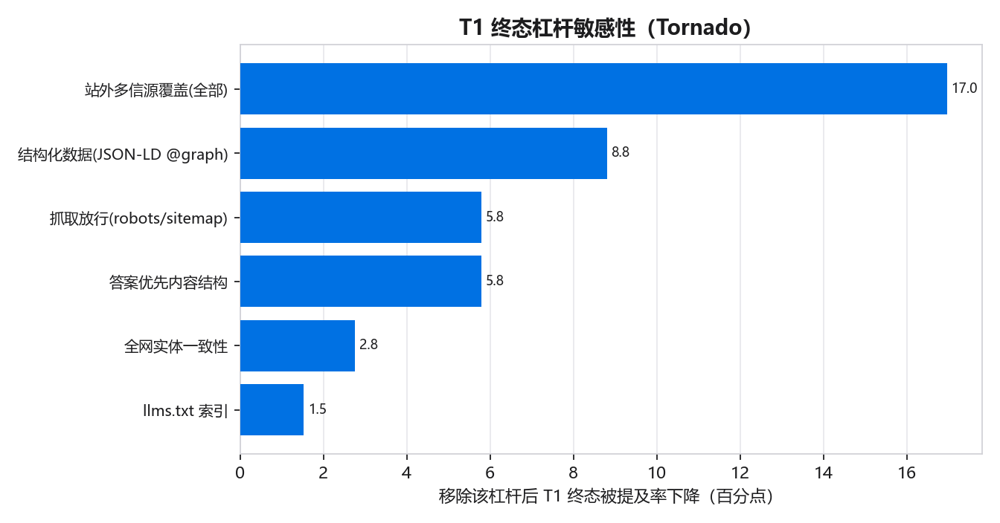
敏感性头部杠杆：站外多信源覆盖(全部)、结构化数据(JSON-LD @graph)、抓取放行(robots/sitemap)——印证“先放行抓取、再上结构化、同时铺站外信源”的优先级。
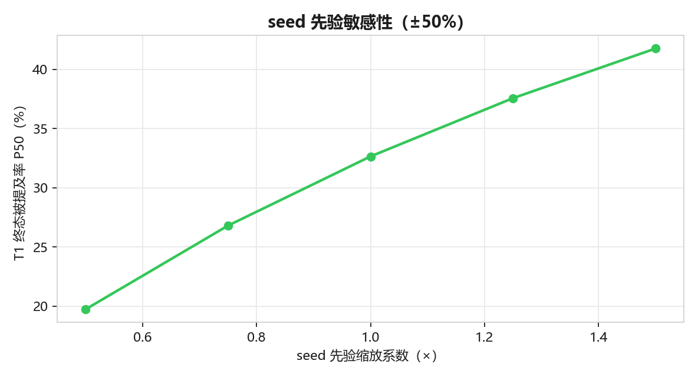
以上为规划假设区间而非业绩承诺；seed、ceiling 与赔率乘子均已在 geo_config.py 标注来源（G1–G8）， 可调、可质疑、可复测。
| 阶段 | 周期 | 核心动作 | 客观检验标准 |
|---|---|---|---|
| 一 · 地基 | 第1–2周 | robots/llms/schema/事实页上线 | 站内 schema 覆盖达标；AI bot 全放行；基线报告产出 ✓ |
| 二 · T1 夺冠 | 第3–6周 | DeepSeek/通义信源覆盖 + 答案优先页 | DeepSeek、通义在 T1 核心问法被提及率显著提升、GVI 排名进入前列 |
| 三 · T2 梯队 | 第7–14周 | 补文心/豆包/元宝/Kimi 信源 | ≥4 个国产模型 T2 类目 GVI 进入前 2 |
| 四 · 稳固出海 | 第15周起 | 英文事实页 + 实体锚点 + 月度复测 | T1 全模型保持领先；海外模型 T1 进入被引用列表 |
每月用同一套 geo_audit.py 复测 GVI，对比阶段目标；未达标的模型定位“抓取层 / 信源层 / 内容层”何处，按“小问题早处理、既纠错又治本”迭代，复盘记入 changelog。
下表把“下一轮复测”的检验标准量化：左为本轮真实基线，右为下月目标阈值；
每月用同一套 geo_audit.py 复测，达标记 ✓、未达标定位“抓取层/信源层/内容层”并记入 changelog。
| 检验指标 | 本轮基线 | 下月目标阈值 | 达标判据 |
|---|---|---|---|
| 总体 GVI（0–100） | 5.2 | ≥ 12.0 | geo_baseline.overall.gvi |
| 品牌平均被提及率 | 7.9% | ≥ 18% | geo_baseline.overall.mention_rate |
| 开放式推荐类被提及率 | 0.0% | ≥ 10% | geo_baseline.by_intent.recommendation |
| 机会缺口（竞品被点名我方缺席） | 176 条 | ≤ 123 条 | geo_baseline.opportunity_gap.total |
| DeepSeek/通义 加权信源覆盖 | 2–5% | ≥ 40% | source_gap.by_model.weighted_coverage |
| 带可核验来源引用率 | 1.8% | ≥ 5% | geo_baseline.overall.citation_rate |
阈值取自 changelog 下月目标，刻意保守可达；目标值为规划假设，最终以复测的客观数据为准（坚持真理、修正错误）。
queries.json · geo_config.py · geo_audit.py · geo_scoring.py · geo_projection.py · source_audit.py · make_offsite_kit.py · build_report_html.py · export_report_pdf.py；数据产物见 outputs/，站外草稿见 offsite/。